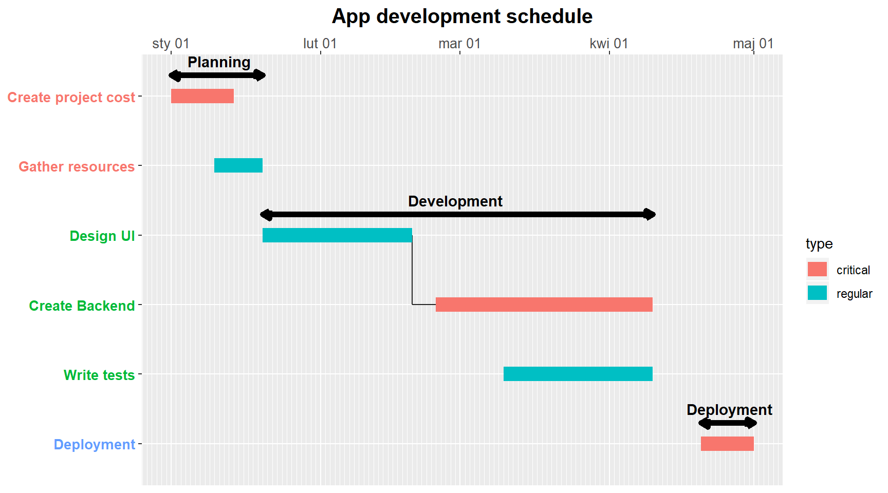

Gantt is a package to create Gantt charts. This are used for scheduling purposes in project management. As different project managers has different needs, this packages offers variety of options to customize charts in very easy way. This document covers how to create charts and deeply walks through styling modifications.
You can easily install and load package to your R session by executing following commands.
At the beginning, there is a need to gather your tasks into csv file. Each row should contain tasks in order you want to plot it on a gantt chart. The following columns should be included:
start date when given task startsend date when given task endstask string name of tasktype string denoting task typestage string describing stage to which task belongscontrol integer saying which tasks are dependent of each other (same value means dependance)Example task file should have following structure
| start | end | task | type | stage | control |
|---|---|---|---|---|---|
| 01/01/2020 | 14/01/2020 | Create project cost | critical | Planning | 1 |
| 10/01/2020 | 20/01/2020 | Gather resources | regular | Planning | 2 |
| 20/01/2020 | 20/02/2020 | Design UI | regular | Development | 3 |
| 25/02/2020 | 10/04/2020 | Create Backend | critical | Development | 3 |
| 10/03/2020 | 10/04/2020 | Write tests | regular | Development | 4 |
| 20/04/2020 | 01/05/2020 | Deployment | critical | Deployment | 4 |
As you created CSV file with tasks specification, you can read it into R with read_task() function. In the next examples, the ‘example_task_1.csv’ will be used which comes with the package.
file_path <- system.file("extdata", "example_task_1.csv", package = "gantt")
task <- gantt::read_task(task_file = file_path, delimiter = ';', date_format = '%d/%m/%Y')The delimiter and date_format has default values as in the example, in the other cases they should be specified.
Next step is to create list with styling parameters, which will be used to draw a Gantt chart. You can do it with create_gantt_config() function by passing parameters as arguments. Function comes with predefined values of all arguments so they do not have to be specified. Later we will explore how changes of parameters affect the plot.
Here, some cases with different styles will be shown. To view list of all styling options with detailed informations visit create_gantt_config manual.
Requirements:
Requirements:
Requirements:
conf <- gantt::create_gantt_config(plot_title = 'App development schedule', plot_title_size = 15,
stage_path = TRUE, control_path = TRUE,
x_axis_label_position = 'top'
)
gantt::gantt(task = task, conf = conf)